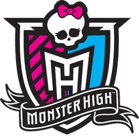
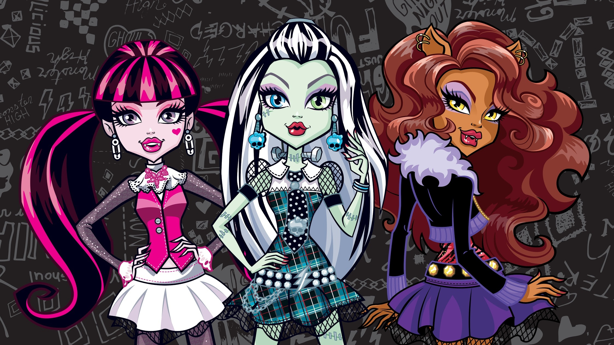
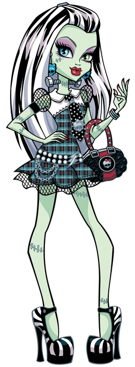
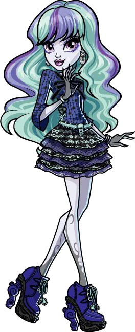
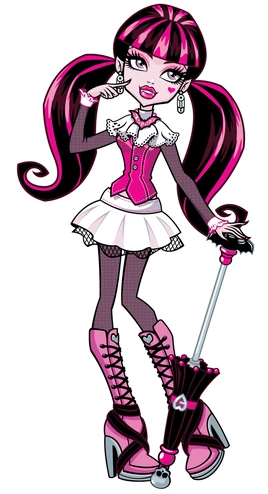
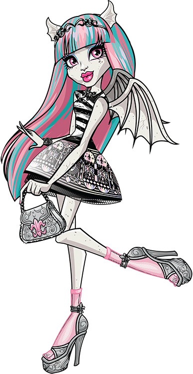

Monster high (WebSite)
The Monster High website went live on May 5th, 2010. It contained biographies of all the characters, along with games, downloads, videos, quizzes, and prizes. It has since then evolved to just include biographies, videos, and a doll store to purchase new and upcoming creations. Many of the elements listed below are no longer active on the main site.
History
Como um dos primeiros componentes da franquia a ser disponibilizado ao público, o site de Monster High entrou no ar em 5 de maio de 2010. Com ele vieram conteúdos como os três primeiros webisódios e os primeiros sete perfis. Todos eles podiam ser acessados por meio da barra de navegação torta, na qual apareciam, quatro de cada vez, arquivos de animação dos sete personagens principais. Esses arquivos podiam ser clicados para acessar os respectivos perfis dos personagens.
Por um curto período, havia uma mensagem de “em breve” anunciando os futuros conteúdos do site. Havia menções específicas a três dos jogos que seriam lançados: Create your own Class Photo and Student ID card!, Registration e Decorate Your Monster High Locker.
Esses jogos exemplificam a natureza interativa que o site tentou adotar inicialmente, antes que isso se tornasse difícil de administrar. Por exemplo, Decorate Your Monster High Locker exige que o jogador insira códigos obtidos por meio da compra de produtos. Os outros dois têm como objetivo inserir o jogador no universo de Monster High, permitindo criar uma carteirinha de estudante e um horário de aulas.
Dos seis primeiros jogos disponíveis no site, apenas um é de fato um jogo, enquanto os demais são atividades de diferentes tipos.
Outros conteúdos iniciais que se encaixavam nesse foco de imersão eram a seção Explore Monster High e a seção The Arts. No final de 2010, esse sistema foi abandonado para criar um site mais voltado ao entretenimento passivo, com a interação sendo transferida para eventos específicos, como as eleições das bonecas e as promoções.
O site foi desenvolvido seguindo essa linha de pensamento até o final de 2013, recebendo muito mais seções e conteúdo. Entre essas mudanças estava um carrossel com quatro banners, adicionado em 14 de fevereiro de 2012, para permitir a exibição de vários anúncios ao mesmo tempo na página principal, embora poucas outras mudanças tenham sido feitas nesse período.
Também houve pouca motivação para realizar mudanças maiores, pois, em 2011, o site foi declarado vencedor na categoria Best Toy & Hobby Rich Media Online Ad da Internet Advertising Competition.

Em 23 de outubro de 2013, o site recebeu uma atualização radical que reequilibrou o conteúdo passivo e interativo disponível e modificou sistemas que já não estavam funcionando. Antes de 23 de outubro, as diferentes versões do site de Monster High disponíveis em cada país não estavam alinhadas. Isso se manifestava principalmente com os novos webisódios enviados, já que cada continente seguia seu próprio cronograma.
A partir de 23 de outubro, os diferentes sites foram reformulados para conter o mesmo conteúdo ao mesmo tempo. Grande parte do conteúdo mais antigo do site americano foi removida durante essa mudança, principalmente porque já não era relevante. Os jogos Make a Monster High Album & Activity Book, Bookmark Maker e Decorate Your Monster High Locker foram removidos, assim como as seções Explore Monster High e Athletics.
Uma terceira seção, Students, também foi removida, pois seu conteúdo foi redistribuído por todo o site na forma de uma lista de personagens rolável e sempre presente. Relacionado a isso, a barra de navegação torta, que utilizava arquivos de animação, foi substituída por uma barra de navegação mais simples e pontiaguda.
Enquanto isso, o conteúdo do site Freaky Fab 13 foi integrado ao site de Monster High, e o conteúdo interativo foi ampliado com a introdução da seção Gore-ientation, criada no espírito da promoção We Are Monster High, lançada em 2013.
A seção Gore-ientation
funciona como uma área de introdução para novos usuários, incorporando as antigas funções Create your own Class Photo and Student ID card! e Registration, além de ensinar os usuários a configurar seu próprio perfil utilizando Maul and Bones — a moeda do site, obtida por meio das atividades realizadas dentro dele.
Grande parte do design da seção Gore-ientation veio da mesma fonte que o design do site de Ever After High, que na época tinha cerca de seis meses, ou foi inspirada nele.




- Frankie
- Twyla
- Draculaura
- Rochelle